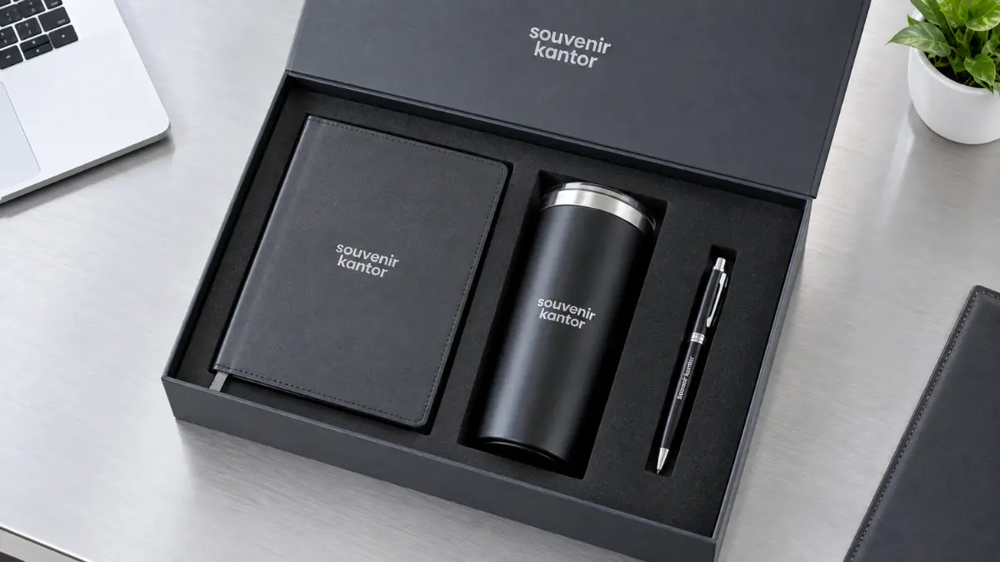

Souvenir Workshop Palembang Custom untuk Peserta & Narasumber
 Arinda Zakia (rnd)
18 September 2026
6 Menit Baca
Arinda Zakia (rnd)
18 September 2026
6 Menit Baca

Souvenir Kantor Jakarta - Souvenir workshop Palembang adalah merchandise fungsional seperti notebook, tumbler, dan tote bag berlogo untuk peserta maupun narasumber acara. Souvenir workshop berfungsi ganda sebagai alat bantu kelancaran acara sekaligus media branding efektif jangka panjang bagi instansi dan penyelenggara.
Souvenir workshop Palembang adalah merchandise fungsional seperti notebook, tumbler, dan tote bag berlogo untuk peserta maupun narasumber acara. Souvenir workshop berfungsi ganda: sebagai alat bantu acara sekaligus media branding yang memberikan dampak visual berkelanjutan.
Peserta dan narasumber membutuhkan jenis souvenir yang berbeda karakter. Produk yang paling banyak dipilih adalah notebook, tumbler, tote bag, dan pulpen. Custom logo dapat diterapkan pada hampir semua jenis produk merchandise ini. Souvenir Kantor Jakarta siap membantu penyelenggara workshop di Palembang menyiapkan merchandise berkualitas tinggi dengan proses pemesanan praktis dan hasil cetak presisi.
- Apa Itu Souvenir Workshop Palembang Custom?
- 1. Souvenir Workshop untuk Peserta
- 2. Souvenir Workshop untuk Narasumber
- 3. Souvenir Workshop sebagai Media Branding
- Pilihan Souvenir Workshop yang Fungsional untuk Acara Anda
- Notebook dan Agenda Custom
- Tumbler Custom
- Tote Bag Custom
- Pulpen Custom
- Paket Souvenir Workshop
- Souvenir Workshop untuk Peserta dan Narasumber, Apa Bedanya?
- Paket Souvenir untuk Peserta
- Paket Souvenir untuk Narasumber
- Keunggulan Souvenir Workshop Custom Branding
- Contoh Paket Souvenir Workshop Palembang
- Souvenir Workshop untuk Berbagai Acara di Palembang
- Bagaimana Cara Memesan Souvenir Workshop Palembang Custom?
- FAQ Souvenir Workshop Palembang
- Kesimpulan
Apa Itu Souvenir Workshop Palembang Custom?
Souvenir workshop Palembang adalah kategori merchandise yang dirancang khusus untuk mendukung jalannya acara workshop, mulai dari kebutuhan mencatat materi hingga menjadi kenang-kenangan yang dibawa pulang peserta.
Berbeda dengan souvenir umum, produk ini dipilih berdasarkan fungsi praktisnya di dalam ruangan acara maupun setelah acara berakhir. Penggunaan barang-barang yang relevan memastikan souvenir tidak berakhir di tempat sampah, melainkan terus dimanfaatkan oleh penerimanya.
Souvenir Workshop untuk Peserta
Peserta workshop membutuhkan souvenir yang mendukung aktivitas belajar dan diskusi secara langsung:
- Notebook: Digunakan untuk mencatat poin-poin penting dan ringkasan materi pemateri.
- Pulpen: Menjadi alat tulis utama pendamping notebook selama sesi berlangsung.
- Tote bag: Memudahkan peserta membawa modul, berkas pelatihan, dan perlengkapan lainnya.
- Tumbler: Menjaga peserta tetap terhidrasi dengan baik selama sesi workshop yang panjang.
Kombinasi produk ini membuat pengalaman peserta lebih nyaman sekaligus memperkenalkan identitas penyelenggara secara natural dan berkesan.
Souvenir Workshop untuk Narasumber
Narasumber umumnya menerima souvenir dengan kesan yang lebih premium sebagai bentuk apresiasi dan ucapan terima kasih atas kontribusi serta waktu yang telah diberikan:
- Notebook cover kulit premium eksklusif
- Tumbler stainless vacuum flask berkualitas tinggi
- Pulpen metal grafir elegan
- Gift set lengkap dalam kemasan hard gift box berpita
Souvenir jenis ini biasanya disiapkan dalam jumlah lebih terbatas namun dengan tampilan serta material yang jauh lebih istimewa dibandingkan souvenir peserta.
Souvenir Workshop sebagai Media Branding
Selain fungsi praktis, souvenir workshop juga berperan sebagai media branding yang sangat efektif. Logo perusahaan atau identitas acara yang tercetak rapi pada notebook, tumbler, atau tote bag akan terus terlihat setiap kali produk tersebut digunakan, jauh melampaui durasi acara itu sendiri.
Inilah yang menjadikan pengadaan souvenir workshop custom logo sebagai investasi promosi jangka panjang yang hemat biaya namun ber-impact besar bagi penyelenggara di Palembang.

Pilihan Souvenir Workshop yang Fungsional untuk Acara Anda
Memilih produk souvenir yang tepat akan menentukan seberapa besar manfaat yang dirasakan peserta maupun narasumber. Berikut beberapa pilihan produk yang paling sering dipesan untuk kebutuhan workshop di Palembang:
Notebook dan Agenda Custom
Notebook custom menjadi pilihan utama karena fungsinya yang langsung terpakai selama sesi berlangsung. Logo pada cover notebook akan dilihat berulang kali oleh peserta saat menyimak pemaparan, menjadikannya media branding yang konsisten dan melekat kuat.
Tumbler Custom
Tumbler custom digunakan berulang kali di luar acara, baik di kantor maupun aktivitas harian, sehingga visibilitas logo pada produk ini cenderung bertahan jauh lebih lama dibandingkan souvenir sekali pakai.
Tote Bag Custom
Tote bag berfungsi membawa modul, notebook, dan perlengkapan workshop lainnya. Bagian depan tote bag menjadi area branding yang sangat luas dan mudah terlihat saat dibawa peserta bepergian.
Pulpen Custom
Pulpen custom cocok untuk kebutuhan peserta dalam jumlah besar karena harganya yang relatif terjangkau namun tetap sangat fungsional sebagai alat tulis pendamping notebook.
Paket Souvenir Workshop
Beberapa produk di atas dapat dikombinasikan menjadi satu paket souvenir workshop (seminar kit), sehingga penyelenggara cukup memesan satu paket lengkap untuk memenuhi kebutuhan branding dan fungsi sekaligus.
| Produk | Fungsi | Cocok Untuk | Area Branding |
|---|---|---|---|
| Notebook | Mencatat materi workshop | Peserta / Narasumber | Cover depan & belakang |
| Pulpen | Menulis catatan & form | Peserta | Body pulpen (cetak / grafir) |
| Tumbler | Wadah minuman harian | Peserta / Narasumber | Body keliling (UV / laser) |
| Tote Bag | Membawa perlengkapan | Peserta | Bagian depan (sablon / DTF) |
| Gift Box | Apresiasi narasumber | Narasumber / VIP | Tutup box & kartu ucapan |
Tabel di atas menunjukkan bahwa setiap produk memiliki area branding dan fungsi yang berbeda, sehingga penyelenggara dapat menyesuaikan pilihan sesuai kebutuhan peserta maupun narasumber dalam satu acara workshop di Palembang.
Souvenir Workshop untuk Peserta dan Narasumber, Apa Bedanya?
Souvenir peserta menekankan fungsi praktis dalam jumlah besar, sedangkan souvenir narasumber menekankan kesan apresiasi dan tampilan premium.
Paket Souvenir untuk Peserta
Paket souvenir peserta umumnya berfokus pada produk fungsional yang mudah dibagikan dalam jumlah besar, seperti notebook, pulpen, tote bag, dan tumbler standar. Packaging biasanya berupa goodie bag sederhana yang praktis dibagikan saat proses registrasi awal acara.
Paket Souvenir untuk Narasumber
Paket souvenir narasumber lebih menonjolkan kesan premium sebagai bentuk apresiasi tinggi, misalnya notebook premium hardcover/kulit, tumbler berkualitas tinggi, serta gift set yang dikemas rapi dalam gift box eksklusif.
| Aspek | Peserta | Narasumber |
|---|---|---|
| Fokus Utama | Fungsional & kemudahan mencatat | Apresiasi & penghormatan |
| Produk | Notebook, pulpen, tote bag, tumbler | Notebook premium, tumbler, gift set |
| Packaging | Goodie bag / pouch paket | Hard gift box eksklusif |
| Jumlah Pesanan | Sesuai total jumlah peserta (massal) | Lebih terbatas (1-5 set) |
| Branding | Logo perusahaan / identitas acara | Logo, nama acara, & pesan khusus |
Keunggulan Souvenir Workshop Custom Branding
Souvenir workshop custom logo menawarkan sejumlah manfaat nyata bagi penyelenggara acara dan korporasi di Palembang:
Memperkuat Identitas
Memperkuat identitas dan citra kredibilitas penyelenggara di mata peserta dan narasumber.
Media Branding Jangka Panjang
Menjadi media promosi visual yang terus terlihat setelah kegiatan workshop selesai.
Merchandise Berguna Nyata
Memberikan merchandise yang benar-benar dipakai untuk produktivitas, bukan sekadar pajangan.
Tampilan Profesional
Membuat workshop terlihat jauh lebih profesional, terorganisir, dan tertata rapi.
Meningkatkan Kepuasan
Meningkatkan kepuasan dan pengalaman peserta selama mengikuti sesi pelatihan.
Desain Fleksibel
Dapat disesuaikan secara fleksibel dengan tema warna, logo, dan konsep acara yang diusung.
Contoh Paket Souvenir Workshop Palembang
Berikut beberapa contoh kombinasi paket souvenir yang umum dipilih penyelenggara workshop di Palembang, mulai dari kebutuhan dasar hingga apresiasi narasumber:
- Paket Basic: Kombinasi notebook dan pulpen, cocok untuk kebutuhan peserta dalam jumlah besar dengan anggaran efisien.
- Paket Standard: Kombinasi notebook, pulpen, dan tote bag, memberikan kelengkapan lebih untuk membawa modul workshop.
- Paket Premium: Kombinasi notebook, tumbler, dan tote bag, cocok untuk peserta VIP atau kebutuhan tampilan yang lebih eksklusif.
- Paket Narasumber: Kombinasi notebook premium, tumbler eksklusif, dan gift box mewah, dirancang khusus sebagai bentuk apresiasi tinggi kepada narasumber.
| Paket | Isi Paket | Target Penerima |
|---|---|---|
| Basic | Notebook + Pulpen Custom | Peserta Reguler (Massal) |
| Standard | Notebook + Pulpen + Tote Bag | Peserta Pelatihan / Workshop |
| Premium | Notebook + Tumbler + Tote Bag | Peserta VIP / Executive |
| Narasumber | Notebook Premium + Tumbler + Gift Box | Narasumber / Keynote Speaker |
Souvenir Workshop untuk Berbagai Acara di Palembang
Kebutuhan souvenir workshop custom dapat disesuaikan dengan jenis acara dan profil peserta yang diselenggarakan di Palembang, di antaranya:
- Workshop perusahaan: Untuk sesi internal karyawan, rapat kerja, dan evaluasi berkala.
- Training karyawan: Pelatihan skill khusus yang melibatkan banyak peserta lintas divisi.
- Workshop kampus: Kegiatan seminar akademik bagi mahasiswa, dosen, dan civitas akademika.
- Workshop instansi: Program sosialisasi dan bimbingan teknis di lingkungan pemerintahan maupun BUMN.
- Workshop komunitas: Acara perkumpulan organisasi profesi dan asosiasi industri.
- Pelatihan profesional: Pelatihan bersertifikasi yang membutuhkan modul dan seminar kit lengkap.
- Corporate event: Acara tahunan perusahaan berskala menengah hingga besar di Palembang.
Bagaimana Cara Memesan Souvenir Workshop Palembang Custom?
Kebutuhan souvenir workshop dapat disesuaikan secara mudah berdasarkan beberapa faktor utama, yaitu:
- Jumlah peserta: Menentukan skala kuantitas produksi untuk mendapatkan harga grosir terbaik.
- Jenis produk yang diinginkan: Pemilihan kombinasi notebook, pulpen, tumbler, atau tote bag.
- Kebutuhan custom logo: Penyesuaian metode cetak (sablon, UV print, laser grafir, atau emboss).
- Komposisi paket: Pemisahan proporsional antara paket peserta dan gift box narasumber.
- Jenis packaging: Pemilihan antara goodie bag kain spunbond/kanvas atau kotak gift box premium.
Semakin jelas kebutuhan ini disampaikan sejak awal, semakin cepat proses penyusunan paket souvenir dan simulasi harga dapat dilakukan oleh tim kami.
Siapkan Souvenir Workshop Terbaik di Palembang Bersama Kami
Butuh souvenir workshop custom untuk acara di Palembang? Konsultasikan kebutuhan merchandise peserta dan narasumber Anda kepada Souvenir Kantor Jakarta untuk mendapatkan pilihan produk dan penawaran harga terbaik.
Chat WhatsApp SekarangFAQ Souvenir Workshop Palembang
Kesimpulan
Souvenir workshop Palembang adalah merchandise fungsional sekaligus media branding yang efektif bagi peserta maupun narasumber. Dengan memilih produk dan paket yang tepat, penyelenggara dapat meningkatkan kesan profesional acara sekaligus memperluas visibilitas brand di Palembang dan sekitarnya.
Hubungi Souvenir Kantor Jakarta sekarang untuk mendapatkan pilihan souvenir workshop custom terbaik yang sesuai dengan konsep, jadwal, dan alokasi anggaran acara Anda.